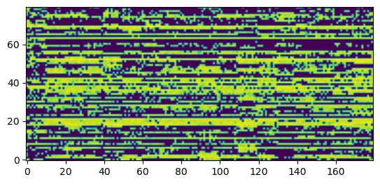

embedding = nn.Embedding(vocab_sz, n_hidden)
samples_embedded = embedding(sample_batch)
samples_embedded.shapetorch.Size([16, 18, 48])The first module of the fastspeech architecture is the input embeddings where they embed the input phonemes in to the models hidden dimension
embedding = nn.Embedding(vocab_sz, n_hidden)
samples_embedded = embedding(sample_batch)
samples_embedded.shapetorch.Size([16, 18, 48])After the embedding layer in the fastspeech model it inputs positional embedding to allow the model to have information on the positons of inputs. The positional embedding used in the FastSpeech paper is the function described in the Attention Is All You Need paper.
get_positional_embeddings (seq_len, d_model, device:torch.device=None)
| Type | Default | Details | |
|---|---|---|---|
| seq_len | The length of the sequence | ||
| d_model | The hidden dimension of the model | ||
| device | device | None | Device you want to use |
pos_emb = get_positional_embeddings(seq_len, n_hidden)
pos_emb.shapetorch.Size([18, 48])inp = samples_embedded + pos_emb
inp.shapetorch.Size([16, 18, 48])Conv1d (*args, gain='linear', **kwargs)
Conv1d(seq_len, 10, 1)(inp).shapetorch.Size([16, 10, 48])Linear (*args, gain='linear', **kwargs)
This component of the model is the engine of the model. It is what will be used to make up the phoneme encoder and mel spectrogram decoder. It consists of a Multi-Head Attention block and a Conv Network. An additional note from the paper is that prior to the addition of residual inputs and the normalization.
scaled_dot_product_attention (query, key, value)
t1 = torch.randn((1,24,32))
scaled_dot_product_attention(t1,t1,t1).shapetorch.Size([1, 24, 32])AttentionHead (embed_dim, head_dim)
AttentionHead(32, 16)(t1).shapetorch.Size([1, 24, 16])MultiHeadAttention (config)
config = {"hidden_size": 32, "num_attention_heads": 4, "hidden_dropout_prob": 0.1}
MultiHeadAttention(config)(t1).shapetorch.Size([1, 24, 32])ConvNet (config)
config = {"hidden_size": 32, "kernal_sizes": [3,3], "filter_size": 16,
"hidden_dropout_prob": 0.1}
ConvNet(config)(t1).shapetorch.Size([1, 24, 32])FeedForwardTransformer (config)
config = {
"hidden_size": 32,
"multi_head_attention": {"hidden_size": 32, "num_attention_heads": 4,
"hidden_dropout_prob": 0.1},
"conv_net": {"hidden_size": 32, "kernal_sizes": [3,3], "filter_size": 16,
"hidden_dropout_prob": 0.1}
}
FeedForwardTransformer(config)(t1).shapetorch.Size([1, 24, 32])DurationPredictor (config)
This module predicts the logarithmic duration length for each phoneme based on the phoneme hidden features. It consists of 2-layer 1D convolutional network with ReLU activation, each followed by the layer normalization and the dropout layer, and an extra linear layer to output a scalar.
config = {"hidden_size": 32, "kernal_sizes": [3,3], "filter_size": 16,
"hidden_dropout_prob": 0.1}
log_durations = DurationPredictor(config)(torch.randn((3,18,32)))
log_durations.shapetorch.Size([3, 18])This module upsamples the phoneme hidden feature to the size of the melspectrogram based on the phoneme durations provided
length_regulator (hi:<built-inmethodtensoroftypeobjectat0x7f092627c540>, durations:<built- inmethodtensoroftypeobjectat0x7f092627c540>, upsample_ratio:float, device:torch.device=None)
| Type | Default | Details | |
|---|---|---|---|
| hi | tensor | The hidden phoneme features | |
| durations | tensor | The phoneme durations to upsample to | |
| upsample_ratio | float | The multiplier ratio of upsampling rate | |
| device | device | None | Device you want to use |
To help convergence we use a postenet as described in tacotron 2
PostNet (config)
Base class for all neural network modules.
Your models should also subclass this class.
Modules can also contain other Modules, allowing to nest them in a tree structure. You can assign the submodules as regular attributes::
import torch.nn as nn
import torch.nn.functional as F
class Model(nn.Module):
def __init__(self):
super().__init__()
self.conv1 = nn.Conv2d(1, 20, 5)
self.conv2 = nn.Conv2d(20, 20, 5)
def forward(self, x):
x = F.relu(self.conv1(x))
return F.relu(self.conv2(x))Submodules assigned in this way will be registered, and will have their parameters converted too when you call :meth:to, etc.
.. note:: As per the example above, an __init__() call to the parent class must be made before assignment on the child.
:ivar training: Boolean represents whether this module is in training or evaluation mode. :vartype training: bool
config = {"hidden_size": 32, "kernal_size": 3, "filter_size": 16, "hidden_dropout_prob": 0.1, "num_layers": 5}
PostNet(config)(t1.transpose(1,2)).shapetorch.Size([1, 32, 24])This is module will contain the full architecture for FastSpeech. it will consists of the feed-forward Transformer block, the length regulator, and the duration predictor.
FastSpeech (config, device=None)
config = {
"embedding_size": 85, "hidden_size": 32, "num_bins": 80, "num_encoders": 2, "num_decoders": 2,
"encoder": {
"hidden_size": 32,
"multi_head_attention": {"hidden_size": 32, "num_attention_heads": 4,
"hidden_dropout_prob": 0.1},
"conv_net": {"hidden_size": 32, "kernal_sizes": [3,3], "filter_size": 16,
"hidden_dropout_prob": 0.1}
},
"decoder": {
"hidden_size": 32,
"multi_head_attention": {"hidden_size": 32, "num_attention_heads": 4,
"hidden_dropout_prob": 0.1},
"conv_net": {"hidden_size": 32, "kernal_sizes": [3,3], "filter_size": 16,
"hidden_dropout_prob": 0.1}
},
"duration_predictor": {"hidden_size": 32, "kernal_sizes": [3,3], "filter_size": 16, "hidden_dropout_prob": 0.1},
"postnet": {"hidden_size": 80, "kernal_size": 3, "filter_size": 16, "hidden_dropout_prob": 0.1, "num_layers": 5},
}
device = torch.device("cuda" if torch.cuda.is_available() else "cpu")
model = FastSpeech(config, device=device).to(device)
with torch.no_grad(): mel, _ = model(sample_batch.to(device), durations.to(device))
mel.shapetorch.Size([16, 80, 180])show_mel(mel[0].cpu());